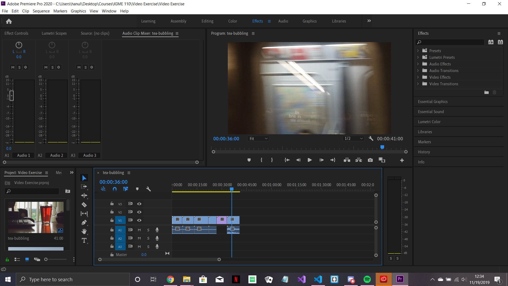

Three clips were put together and cut after several seconds each in order to make
a coherent story of a person heading out on their morning commute. The last clip has
audio to express the suddenness of work and city life.

Sources (All From Pexels):